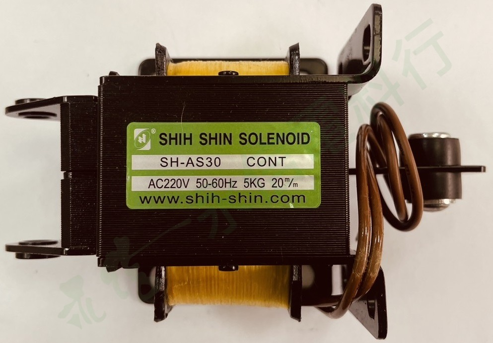

本頁使用實際商品照片並套用永信電料行低干擾浮水印；點選縮圖可切換照片。
 世僖科技 SHIH SHIN
世僖科技 SHIH SHINAC 疊片型電磁鐵｜SH-AS 系列
SH-AS30 AC220V
SH-AS30 為世僖科技 AC Laminated Solenoid（AC 疊片型電磁鐵／電吸鐵）。本頁規格以實物銘牌與世僖科技原廠 SH-AS 系列資料交叉核對；替換時需同時確認電壓、頻率、行程、出力、尺寸與實際機構連接方式。
產品型號SH-AS30
本頁實物電壓AC220V
額定出力5 kg
行程20 mm
選型重點
電吸鐵不可只看「幾公斤」替換；同時核對 AC110／220V、50／60Hz、行程、框架尺寸、鐵芯／連桿長度與安裝空間。
本網站不顯示即時庫存與價格，實際供應狀況與交期請來電確認。
PRODUCT OVERVIEW
產品用途與型式
世僖科技將 SH-AS 系列歸類為 AC Laminated Solenoid。原廠說明此系列採 AC 疊片式鐵芯結構，可直接使用 AC 電源，標準系列提供 110／220V AC、50／60Hz；不同型號的行程與出力不同。
- 型式：AC 疊片型電磁鐵（Solenoid）。
- 控制電源：本頁實物為 AC220V；頻率 50/60Hz。
- 機械核對：必須確認行程、出力、外型尺寸與鐵芯端部／連桿的實際連接方式。
- 系列差異：SH-AS、SH-ASS 與 A 尾碼型號不可只依出力數字視為同一尺寸或直接替代。
NAMEPLATE INFORMATION
實物銘牌資料
品牌世僖科技 SHIH SHIN
型號SH-AS30
本頁實物電壓AC220V
頻率50/60Hz
使用標示CONT（依實物銘牌）
產品類型AC 疊片型電磁鐵／電吸鐵
本區以實物外盒與本體銘牌為主；「CONT」保留原銘牌標示，不額外延伸未經原廠文件確認的工作週期定義。
VERIFIED SPECIFICATION DATA
詳細規格
線圈／驅動架構AC 疊片型電磁鐵（AC Laminated Solenoid）
原廠系列電壓110 / 220 V AC
頻率50 / 60 Hz
本頁實物電壓AC220V
額定行程20 mm
額定出力5 kg
原廠外型尺寸 L×W×H130 × 80 × 63 mm
可動鐵芯重量393 g
原廠總重量1.45 kg
出力必須與原廠列示的行程一併理解，不可只用公斤數判定替代。 不同年代或客製機構若與標準表有差異，以實物與對應原廠資料為準。
SELECTION CHECKLIST
詢價與替換核對
01
完整型號與電壓
確認 SH-AS30 與 AC220V，不可只看外型。
02
行程與出力
本型號原廠資料為 20 mm、5 kg。
03
尺寸與連接
確認框架尺寸、鐵芯／連桿長度、孔位與機構方向。
04
使用條件
提供原機照片、動作方式、通電條件與需求數量。